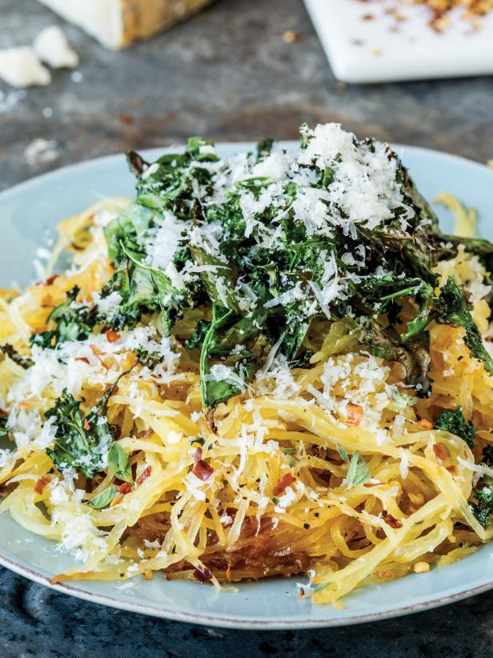

Healthy Eating
With so many alternative proteins available now, going meatless (even for a day or two) is more delicious than ever.
Including vegetarian and vegan options, these high-protein main course recipes will keep your energy levels up and satisfy even the most steadfast carnivore.
Chili Bean-and-Bulgur Cakes (ingredients).
- ½ cup whole-kernel bulgur wheat.
- 2 Tbsp vegetable oil.
- 1 Tbsp tomato paste.
- 1 tsp chili powder.
- ½ tsp ground cumin.
- Large pinch cayenne pepper.
- ¼ cup reduced-fat sour cream.
- Zest and juice of 1 lime.
- Kosher salt.
- 1 15-oz can kidney beans, drained and rinsed.
- ⅓ cup shredded Mexican blend cheese, plus extra for sprinkling.
- 2 Tbsp breadcrumbs.
- 2 scallions, sliced.
- Cooking spray.
- 1 romaine heart, finely shredded.
Directions
- Combine the bulgur with 1 1/2 cups of water in a small saucepan. Bring to a boil, reduce heat to medium low, cover and simmer until tender, 10 to 12 minutes. Drain off the excess water and cool the bulgur completely.
- Heat the oil in a small skillet over medium-high heat. Add the tomato paste, chili powder, cumin and cayenne and whisk until the oil is yellow and the spices are fragrant, about 45 seconds. Remove from the heat and let the chili oil cool to room temperature.
- Whisk together the sour cream, lime zest and juice, a pinch of salt and 1 tablespoon water in a small bowl. Refrigerate until ready to serve.
- Position an oven rack at the top of the oven and preheat the broiler. Line a baking sheet with foil. Combine the beans, cooked bulgur, cheese, breadcrumbs, 1 scallion, chili oil and 1/2 teaspoon salt in a large bowl. Use a potato masher to mash and combine the mixture until it holds together when squeezed. Form into 8 uniform cakes about 3/4-inch thick.
- Arrange the cakes on the prepared baking sheet and generously coat each with cooking spray. Broil until a golden-brown crust forms, 3 to 4 minutes. Remove the baking sheet from the broiler and use a metal spatula to flip each cake. Coat the tops of the cakes with cooking spray and continue to broil until the tops are golden brown, 3 to 4 minutes.
- Spread the romaine on a platter, transfer the chili cakes to the platter, drizzle with the sour cream mixture and sprinkle with cheese and the remaining scallion.
Roasted Spaghetti Squash with Kale and Parm

Ingredients
- 1 large spaghetti squash.
- 2 Tbsp plus 1 tsp extra-virgin olive oil.
- 2 tsp oregano leaves.
- 2 garlic cloves, minced.
- ½ tsp red chili flakes.
- 2 tsp kosher salt.
- 6 - 8 turns freshly ground black pepper.
- 1 large bunch kale.
- ¾ oz Parmesan cheese, finely grated (about 1/2 cup).
Directions
- Preheat the oven to 350ºF.
- Split the spaghetti squash in half lengthwise. Use a large spoon to scrape out the seeds and discard.
- Place the spaghetti squash cut side up on a rimmed baking sheet and drizzle with 2 tablespoons of the olive oil.Sprinkle with the oregano, garlic, chili flakes, 1 teaspoon of the salt, and 3 or 4 turns of the black pepper. Turn over so they are cut side down (this will enable them to cook faster).Bake in the center of the oven until the squash flesh is fork-tender, about 45 minutes. Set aside to cool slightly, about 5 minutes. Use a large spoon and fork to scrape out the fibers from the squash halves and place them in a large bowl.Toss gently to separate the strands so they resemble spaghetti.
- Meanwhile, wash the kale and remove and discard the stems. Tear the leaves into large bite-size pieces (about 1 inch). Dry completely in a salad spinner. Transfer the kale to a large bowl.
- Dress very lightly with the remaining 1 teaspoon olive oil, so the leaves are barely coated. Season with the remaining 1 teaspoon salt and 3 or 4 turns black pepper.
- Spread the leaves evenly on two rimmed baking sheets and roast until crispy and bright green, 12 to 14 minutes. Set aside.
- To assemble, place the spaghetti squash on a large platter and top with the crispy kale chips. Sprinkle with the Parmesan and serve.
The entire information of this page has been lifted from Food Network's page on Healthy Eating.
Return to the top of the page.